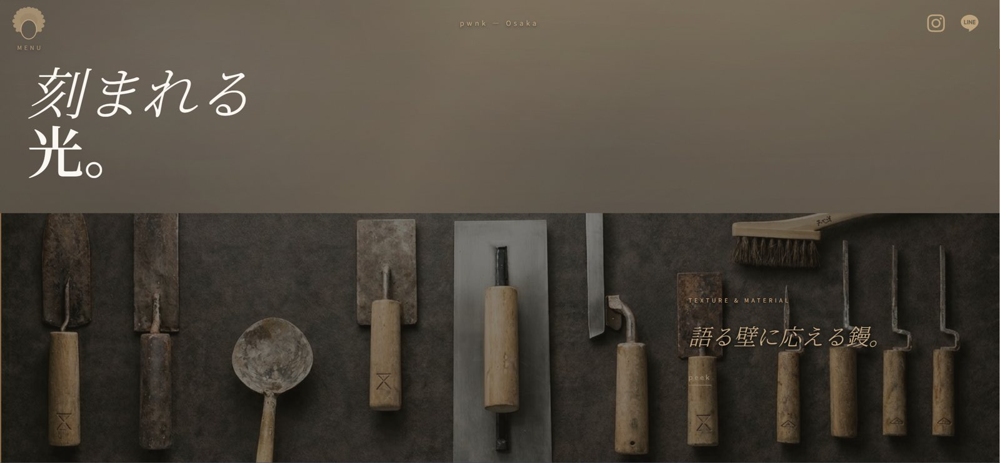

Web
職人のためのホームページ制作
腕のいい職人ほど、仕事を伝える場所を持っていません。
素材や仕上げの魅力が伝わって、
相談がそのまま届くホームページを作ります。

Works 01 ／ 左官工事
中元工房（pwnk）
大阪・堺の左官工事店。モールテックスと漆喰の仕上げを中心に、素材の質感が伝わる構成にしました。相談は公式LINEに一本化して、問い合わせまでの手間を減らしています。
サイトを見る